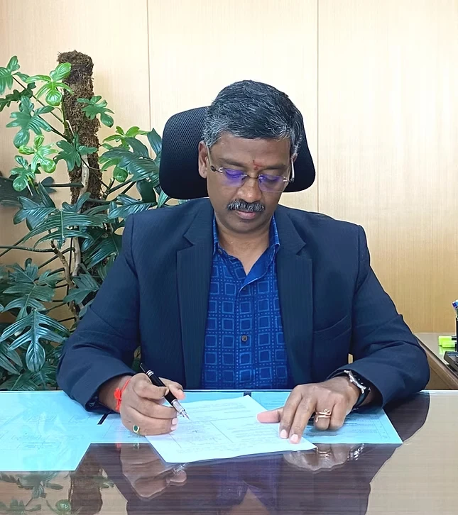

Srinivasulu IFS
Principal Secretary, Forest, Ecology & Environment · Government of Karnataka. Three decades of forest governance, wildlife management and climate policy.
"The solution lies in nature, choose sustainable lifestyle. Be Eco friendly."

What others say
about me
Srinivasulu is a dedicated and remarkable individual whose steadfast commitment to the environment, forest and wildlife conservation truly sets him apart. As an exceptional officer, he has gone far beyond routine responsibilities, immersing himself in the protection of nature and natural resources. His efforts reflect not only professional excellence but also a deep personal passion for safeguarding the planet and promoting the well-being of its people.
Academic Excellence
Services, Initiatives & Contributions
Srinivasulu, an Indian Forest Service officer from the 1997 batch, currently serves as the Principal Secretary of Forest, Ecology, and Environment, Government of Karnataka. His distinguished career began at Nagarahole National Park and expanded across several districts, including Bengaluru Rural, Mysuru, Kalaburagi, Koppal, and Chitradurga.
As Director of the Tiger Project at Kali Tiger Reserve in Dandeli, he introduced key conservation measures that significantly improved the lives of tigers. His documentary on the River Kali received international acclaim, with select segments released by Hon'ble Prime Minister Narendra Modi at the COP 21 Summit in Paris.
Career Postings
Let's build a greener
Karnataka together
For media, speaking engagements, collaboration or research — reach out. All enquiries receive a response within five working days.
Start a conversation with our team
Tell us about your enquiry and we'll find the right path forward together.